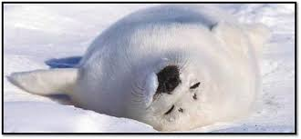
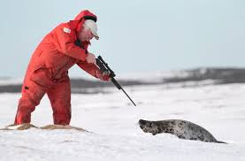
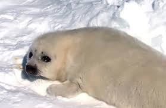
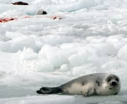
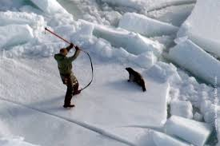
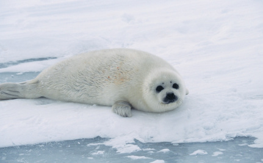

What Is Seal Slaughter?
Every year, nearly a million seals worldwide are subjected to painful and often lingering deaths, largely for the sake of fashion.(1) Despite a worldwide outcry over the cruelty of the slaughter and a ban on seal products in many countries, the massacre continues.
Where and Why It Happens
Seals are slaughtered in Greenland, Namibia, Iceland, Norway, Russia, Britain, Finland, Sweden, and the U.S. The majority of the animals die in the Arctic regions of the Atlantic.
During Canada’s annual commercial seal slaughter, as many as 400,000 seals can be shot or bludgeoned. Canada halted the slaughter of so-called “whitecoats” in 1987, but seals lose their white fur at around 2 weeks of age, so most seals are still shot or clubbed to death before their third month of life.
A senior research fellow at the University of Bristol was part of a veterinary team that observed a seal slaughter in Newfoundland in 2007. He reported “widespread disregard for the requirements of Canada’s marine mammal regulations” and sealers who did not check for vital signs before skinning the seals. Nearly half of the seals documented by the team showed “some response to stimuli after being hooked and dragged,” and the majority of seals who were shot were not immediately killed by the first bullet.
    What Has Been Done
Seal products are banned in the U.S., and the U.S. Senate has unanimously passed a resolution calling for an end to the seal slaughter in Canada. After Russian Prime Minister Vladimir Putin declared the seal slaughter a “bloody practice,” Russia banned the slaughter of harp seals under 1 year of age. Calling the seal slaughter “inherently inhumane,” a European Parliament committee endorsed a bill to ban the trade in seal products from member countries, which the European Union subsequently approved (except for Canadian Inuit items traded for cultural, education, or ceremonial purposes). Although, In 2014, the WTO rejected Canada’s and Norway’s objection to the ban in an unprecedented ruling th noted the necessity to “protect public morals".